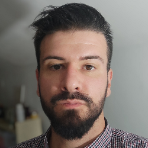

Moje ime je Toni Nevešćanin. Rođen sam 26. srpnja 1991 godine u Splitu
2014 godine sam završio na FESBu stručni preddiplomski studij elektronike s temom "Mobilne mreže 4.generacije"
2016 sam završio diplomski stručni studij na Sveučilišnom odjelu za stručne studije
Od 2017 godine radim u školstvu i imam aspiracije postati frontend developer
Neke od tehnologija s kojima sam radio su :
- Ms Office
- Visual studio i VS Code
- Google tools
- Linux
i toga će biti još ...
